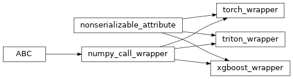

coffea.ml_tools
Tools to interface with various ML inference services
Providing the interfaces to the run ML inference such that user can simply handle data mangling in awkward/numpy formats. Specifics of passing numpy arrays conversion and the handling of dask are mostly abstract away.
Classes
Wrapper for awkward.to_numpy evaluations for dask_awkward array inputs. |
|
|
Wrapper for running pytorch with awkward/dask-awkward inputs. |
|
Wrapper for running triton inference. |
|
Very simple wrapper for xgbooster inference. |
Class Inheritance Diagram
